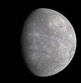
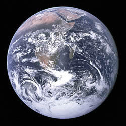
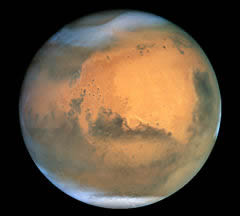
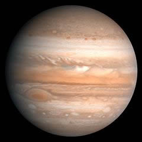
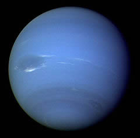

太阳系是以太阳为中心，和所有受到太阳的重力约束天体的集合体：8颗行星、至少165颗已知的卫星、3颗已经辨认出来的矮行星（冥王星和他的卫星）和数以亿计的太阳系小天体。这些小天体包括小行星、柯伊伯带的天体、彗星和星际尘埃。依照至太阳的距离，行星序是水星、金星、地球、火星、木星、土星、天王星、和海王星，8颗中的6颗有天然的卫星环绕着。
水星
水星在八大行星中是最小的行星，比月球大1/3，它同时也是最靠近太阳的行星。 水星目视星等范围从 0.4 到 5.5；水星太接近太阳，常常被猛烈的阳光淹没，所以望远镜很少能够仔细观察它。水星没有自然卫星。唯一靠近过水星的卫星是美国探测器水手10号，在1974年—1975年探索水星时，只拍摄到大约45%的表面。水星是太阳系中运动最快的行星。水星的英文名字Mercury来自罗马神墨丘利（赫耳墨斯）。他是罗马神话中的信使。因为水星约88天绕太阳一圈，是太阳系中公转最快的行星。符号是上面一个圆形下面一个交叉的短垂线和一个半圆形 (Unicode). 是墨丘利所拿魔杖的形状。在前5世纪，水星实际上被认为成二个不同的行星，这是因为它时常交替地出现在太阳的两侧。当它出现在傍晚时，它被叫做墨丘利；但是当它出现在早晨时，为了纪念太阳神阿波罗，它被称为阿波罗。毕达哥拉斯后来指出他们实际上是相同的一颗行星。
金星

金星是八大行星之一，按离太阳由近及远的次序是第二颗。它是离地球最近的行星。中国古代称之为太白或太白金星。它有时是晨星，黎明前出现在东方天空，被称为“启明”；有时是昏星，黄昏后出现在西方天空，被称为“长庚”。金星是全天中除太阳和月亮外最亮的星，亮度最大时为-4.4等，比著名的天狼星（除太阳外全天最亮的恒星）还要亮14倍，犹如一颗耀眼的钻石，于是古希腊人称它为阿佛洛狄忒（Aphrodite）——爱与美的女神，而罗马人则称它为维纳斯（Venus）——美神。金星和水星一样，是太阳系中仅有的两个没有天然卫星的大行星。因此金星上的夜空中没有“月亮”，最亮的“星星”是地球。由于离太阳比较近，所以在金星上看太阳，太阳的大小比地球上看到的大1.5倍。
地球
水星在八大行星中是最小的行星，比月球大1/3，它同时也是最靠近太阳的行星。 水星目视星等范围从 0.4 到 5.5；水星太接近太阳，常常被猛烈的阳光淹没，所以望远镜很少能够仔细观察它。水星没有自然卫星。唯一靠近过水星的卫星是美国探测器水手10号，在1974年—1975年探索水星时，只拍摄到大约45%的表面。水星是太阳系中运动最快的行星。水星的英文名字Mercury来自罗马神墨丘利（赫耳墨斯）。他是罗马神话中的信使。因为水星约88天绕太阳一圈，是太阳系中公转最快的行星。符号是上面一个圆形下面一个交叉的短垂线和一个半圆形 (Unicode). 是墨丘利所拿魔杖的形状。在前5世纪，水星实际上被认为成二个不同的行星，这是因为它时常交替地出现在太阳的两侧。当它出现在傍晚时，它被叫做墨丘利；但是当它出现在早晨时，为了纪念太阳神阿波罗，它被称为阿波罗。毕达哥拉斯后来指出他们实际上是相同的一颗行星。
火星
火星（Mars）是八大行星之一，符号是♂。因为它在夜空中看起来是血红色的，所以在西方，以希腊神话中的阿瑞斯(或罗马神话中对应的战神玛尔斯)命名它。在古代中国，因为它荧荧如火，故称“荧惑”。火星有两颗小型天然卫星:火卫一Phobos和火卫二Deimos(阿瑞斯儿子们的名字)。两颗卫星都很小而且形状奇特，可能是被引力捕获的小行星。英文里前缀areo-指的就是火星。
木星
木星古称岁星，是离太阳远近的第五颗行星，而且是八大行星中最大的一颗，比所有其他的行星的合质量大2倍（地球的318倍）。木星绕太阳公转的周期为4332.589天，约合11.86年。木星(a.k.a. Jove)希腊人称之为 宙斯(众神之王，奥林匹斯山的统治者和罗马国的保护人，它是Cronus（土星的儿子。)木星是天空中第四亮的物体（次于太阳，月球和金星；有时候火星更亮一些），早在史前木星就已被人类所知晓。根据伽利略1610年对木星四颗卫星：木卫一，木卫二，木卫三和木卫四（现常被称作伽利略卫星）的观察，它们是不以地球为中心运转的第一个发现，也是赞同哥白尼的日心说的有关行星运动的主要依据。
土星

土星古称镇星或填星,因为土星公转周期大约为29.5年,我国古代有28宿,土星几乎是每年在一个宿中,有镇住或填满该宿的意味,所以称为镇星或填星，直径119300公里（为地球的9.5倍），是太阳系第二大行星。它与邻居木星十分相像，表面也是液态氢和氦的海洋，上方同样覆盖着厚厚的云层。土星上狂风肆虐，沿东西方向的风速可超过每小时1600公里。土星上空的云层就是这些狂风造成的，云层中含有大量的结晶氨。轨道距太阳142，940万千米，公转周期为10759.5天，相当于29.5个地球年，视星等为0.67等。在太阳系的行星中，土星的光环最惹人注目，它使土星看上去就像戴着一顶漂亮的大草帽。观测表明构成光环的物质是碎冰块、岩石块、尘埃、颗粒等，它们排列成一系列的圆圈，绕着土星旋转。
天王星

天王星是太阳系中离太阳第七远行星，从直径来看，是太阳系中第三大行星。天王星的体积比海王星大，质量却比其小。天王星是由威廉·赫歇耳通过望远镜系统地搜寻，在1781年3月13日发现的，它是现代发现的第一颗行星。事实上，它曾经被观测到许多次，只不过当时被误认为是另一颗恒星（早在1690年John Flamsteed便已观测到它的存在，但当时却把它编为34 Tauri）。赫歇耳把它命名为"the Georgium Sidus（天竺葵）"（乔治亚行星）来纪念他的资助者，那个对美国人而言臭名昭著的英国国王：乔治三世；其他人却称天王星为“赫歇耳”。由于其他行星的名字都取自希腊神话，因此为保持一致，由波德首先提出把它称为“乌拉诺斯(Uranus)”（天王星），但直到1850年才开始广泛使用。
海王星
海王星（Neptune）是环绕太阳运行的第八颗行星，也是太阳系中第四大天体（直径上）。海王星在直径上小于天王星，但质量比它大。在天王星被发现后，人们注意到它的轨道与根据牛顿理论所推知的并不一致。因此科学家们预测存在着另一颗遥远的行星从而影响了天王星的轨道。Galle和 d'Arrest在1846年9月23日首次观察到海王星，它出现的地点非常靠近于亚当斯和勒威耶根据所观察到的木星、土星和天王星的位置经过计算独立预测出的地点。一场关于谁先发现海王星和谁享有对此命名的权利的国际性争论产生于英国与法国之间（然而，亚当斯和勒威耶个人之间并未有明显的争论）；现在将海王星的发现共同归功于他们两人。后来的观察显示亚当斯和勒威耶计算出的轨道与海王星真实的轨道偏差相当大。如果对海王星的搜寻早几年或晚几年进行的话，人们将无法在他们预测的位置或其附近找到它。